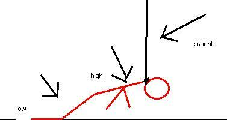
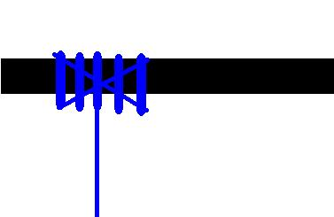

(Webspinner note: The below was sent to the webspinner address as a combined suicide note / suspension hanging reference. Since the author hasn't contacted me again, I assume he sent the letter on a time delay, and was successful.)
"Steven"'s Suspension Hanging Reference
Welcome, all of you. Whether you be suicidal folk, looking for a quick, sure, economical, and "painless" way to die, or are some conservative prick hoping to stifle my words. Perhaps you're just curious about hanging, perhaps you want to murder someone, be you one, or all, welcome.
Disclaimer of the disclaimer: I could care less about lawsuits, and penalty of law, you know why? If you're reading this, I'm dead. Ha, ha, can't punish me! The reason for the disclaimer is to avoid improper use of the 'Hanging Text'. Since proper use of the text is killing oneself, what could be worse than that? I'll tell you. You could just fly through the text, follow it loosely, and end up much worse than before you read the damn thing. That's right! Near-lethal acts could wind up fucking you over!!!
Real Disclaimer: I am YOU! I am not a doctor, and I am not qualified by any extent of the law (except amendment 1) to be telling you this. I may have forgotten some things, I may be wrong about some things, hell, I could be a sadist who gets his rocks off by knowing you're going to fail, and hurt yourself. Accept, and understand that you cannot fully trust me.
I'm going to spare you the "Life is worth living bullshit." If your life is worth living, you should know damn well it is. If you do this and at the last second, change your mind as you pass out, the world will not end. And if that does happen, parents and loved ones can rest easy knowing I will be having various uncomfortable objects shoved up my ass in hell. But, I digress.
I do not advocate suicide, but I do advocate suicidal people's right to easy, painless, methods. Or, at least decent info that points them in the right direction. That is my intent here. Note that no amount of information in the world is going to give you the courage to carry out an act, no matter how easy it is. If you've come here looking for that info, you probably aren't ready to die yet.. But, I digress
THE CAROTID ARTERY, NATURE'S EMERGENCY EXIT.
I can't tell you how many nights I've lied lazily wallowing in self pity, thinking, 'Goddammit, if only humans had a self destruct button..." Well, we don't folks, but, we have something VERY close to just that. A very large vessel known as the Carotid artery, that's sole purpose is to supply oxygen rich blood to the brain.
This artery will make or break you. Without that supply of blood to your brain you will be dead in minutes (brain death, more later) and be unconscious very rapidly.
CAROTID SINUS
Many of you may have done this in school, or somewhere else. You lean over, and let the blood rush to your head for a few seconds. Exhale, and quickly raise your head up and clasp your neck tightly. Shortly after that your vision will turn black, you may hallucinate a bit, and a few seconds later you're conscious and all tingly. So, what causes this? 2 things. The obvious thing is that you are cutting off the blood supply to your brain by clasping your hands around your neck. But, try this without bending your head (neck, more specifically), and you'll get the felling that blood is accumulating in your head, because it is. It will get very painful, very quick, and it will be a very long time before you pass out. And as all suicidal people know PAIN + TIME = BAD. You see, there is a little device in your neck that tells your heart how much pressure is needed to adequately supply your brain with blood. Now, this isn't important for hanging, but for strangulation, this could mean the difference between life and death. Or the difference between a pale, peaceful corpse, and a grey bluish swollen hideous mass that used to be your pretty little head.
Well, I hope you've learned so far that, the carotid artery is the key to death here. Let's move on to the questions.
Q&A
SHOULD I HANG OR STRANGLE MYSELF, WHAT'S THE DIFFERENCE?
001. Well, with a little more knowledge you will be able to answer this question yourself. For some, the thought of hanging seemed extremely traumatic, and painful. Strangulation seemed better. I was ignorant then, I'm assuming you are now. So, walk with me to the path of enlightenment. You've still got time to turn back...
So, what are the differences? In a nutshell, they are two sides of the same coin. Both involve, ideally, causing significant pressure to the carotid artery, and shutting off blood flow to the brain.
With strangulation, you rely on the tension of the rope, and knot around your neck, and the pressure is applied via friction, and constriction. (I don't have a real good explanation, I know).
Suspension hanging compresses the Carotid artery by the pull of gravity, and the weight of your body.
Suspension hanging: the pressure is caused because your body being pulled downward, but the rope does not allow that.
Strangulation: the pressure is caused because you are not giving your artery enough room to allow the passage of blood.
So, basically, the difference is, friction in strangulation, gravity and friction in hanging. Other than that, the cause of death is identical (ideally).

IS THE TYPE OF ROPE IMPORTANT???
002. YES!!! The fact that I am here is proof that the type of rope is important. If you are going to hang yourself, you are going to need rope that will support MORE than your weight. Unless you are utterly mammoth (600 pounds+) this will not be difficult to find. Most any rope will do. Kite string will NOT work. As a general rule, if you can cut the rope with one clip of scissors, it will not work. Avoid electrical cords like the plague, if you plan on hanging. They will snap, even those thick orange extension cords.
Strangulation is a whole other ball of wax. You can use just about any rope, cord, or even thick string (twine). Comfort IS an issue, though. More on that later
HOW MUCH ROPE (LENGTH) DO I NEED???
003. How much rope (length) will I need? Not much. For suspension hanging, 2 feet more than your height should be plenty. For strangulation, 3-5 times the diameter of your neck. Gently wrap something around your neck 3-5 times. You have your length needed.
WHAT PLACE DOES A METAL RING HAVE IN HANGING?
004. You've got some attitude for a suicidal person, you know that? Sorry to answer a question with a question... anyway. The metal ring. This is something you probably won't hear about anywhere else. This little gem will make hanging myself a lot more lethal, if done right. Make 2 loops around the ring. Then move the loops to opposite ends. You will notice a piece of slack, make that piece of slack face so that it will not come into contact with the neck, when the rope is applied. This does 2 great things. It takes pressure off the trachea (more later), and it increases pressure on the area you need pressure on, the sides of the neck. You aren't going to need an exact measurement. But, from what I know, a little bigger than your trachea is better than a little smaller. (I could be wrong, I'm not completely sure on this) If you're really in a bind, there is no foreseeable reason why a ring from your shower curtain shouldn't work. Note 2 things if you do use a ring. The type of rope is important. Hard, stiff rope + ring = painful death, or no death at all. Use a soft rope, and lubricate it liberally with a bar of soap. The other thing to consider is that you will be creating very high tension with the addition of the ring. So make damn sure the rope can support more than your weight (more later). One more thing, the ring should NOT be used for strangulation!!!!!!!!!!!!!!!!!
IS THE LIGATURE (KNOT) IMPORTANT??
005. Is the ligature (knot) important? Yes, yes, it is. Very important. You might think that since you're hanging, the hangman's knot would be ideal. You'd be oh, so very wrong. A simple slip knot is ideal. This will allow the rope to tighten a great deal more than a hangman's noose. I have no idea what knot is best for strangulation, consult Geo Stone's site for good info (I have no affiliation with geo stone, or his book.). Check out the mentioning of a device that will allow for tightening of rope, and will not allow the rope to loosen. If memory serves me correctly, it is called a 'stay tight' and can be purchased at an auto supply store.
IS THE SUPPORT (PLACE YOU HANG FROM) IMPORTANT?
006. Of course it is. You will want to find a support that does 2 things.

I'M SKINNY/FAT, WHAT METHOD IS BEST?
007. I'm skinny/fat, what method is best? If you're skinny, strangulation will probably be best. Hanging needs weight, and you don't have it. Conversely, if you are fat, it's going to be a lot harder to compress your neck, so use that blubber to drag you down. If you're muscular, hanging would probably be best. NOTE: Fat people can be strangled, and skinny people can be hanged. I'm simply suggesting that one might be less traumatic for your body type than the other. WHAT HAPPENS IF I LIVE? 008. What happens if I live? What are the dangers and consequences? If you live, you can suffer some really fucked up consequences. Brain damage will set in the moment you become unconscious, and after about 3 minutes if you are recovered, you will most likely be brain dead, but still alive. So, make a living will! Also, if you don't hang correctly (this goes double for strangulation) you could just end up with a swollen, blue-greyish blood filled face (head), and you'll be hideous for weeks.
DOES IT HURT? HOW CAN I AVOID PAIN?
009. Strangulation, and hanging, if done correctly, will be completely painless in a physical sense. The metal ring will greatly reduce the pain factor. Let's go over the things that cause pain. Friction-- Tight rope on your neck can burn. For this wrap a light cloth around your neck. Pinching-- This is a big problem in strangulation, because you're going to have to pull very tight, and when you tie a knot, this will pinch the skin. The cloth around your neck will avoid this. In hanging, have the cloth, and position the ligature behind the neck, this will help (and it's the only way to hang comfortably). Compression of the airway-- This hurts like a bitch. This is why the ring is nice. But, you'll also need to have some supplement padding directly under the ring. 1/4 roll of toilet paper is ideal. If you don't have a long neck, cut some of the length off. If your neck isn't wide, use a wash cloth folded so that it cushions, but doesn't push the rope away too much. Use the wash cloth with strangulation, but don't use the ring!!!! Also, take a really deep breath before you hang, or strangle, that way you won't have the desire to breath until long after you pass out, that way you won't have to deal with the discomfort associated with labored breathing. Also, try to keep keep you tongue in your mouth. You could bite your tongue off. I have heard that you should put some light padding on the back of your neck, too. This will increase the pressure on the sides of your neck. It's theoretical, and untested, but it sounds good, and I'll try it. Let's recap Light cloth surrounding neck wash cloth/1/4 roll of toilet paper, (front and back, in theory) ring (only with hanging!!!!) hold breath, and keep tongue in mouth.
I LOVE MY (INSERT PERSON THAT WILL FIND YOUR BODY), WHAT ARE THEY GOING TO SEE? IS IT TRAUMATIC???
010. It is totally going to suck for the person that finds your corpse. Maybe not as bad as a 12 gauge blast to the head, but it's gong to be ugly. Strangulation is not pretty! And seeing a limp body hanging from a rope is going to haunt them forever. you might want to consider doing this away from loved ones. Also, if you're not claustrophobic, put a pillow case over your head. They'll know you're dead. Don't make them see your dead face.
IS IT OKAY TO DIE A VIRGIN???
011. NO! If you have a sex drive and functioning genitalia, go fuck someone. If you're a chick this will be very easy, no matter how hideous you, you can get some. If you're a guy, go buy a whore before you die. Even if you're a nihilist, you'll agree this cannot be something you can die without knowing.
I THINK YOU'RE FULL OF SHIT!!!!
012. Good, I don't want this text to be your sole source for an attempt on your life, go read more, this is only 1 piece of the pie. Go read, go experiment. Anyway, that's not a question...
YOU HAD A NICE INTRO, COULD YOU EXPLAIN AGAIN THE BODY PARTS WE'LL BE DEALING WITH?
013. Trachea-- that rubbery thing in your neck. If you compress it too much, it will suck! Carotid artery-- it's the thing you can feel pulsating under your jaw, compress it and you'll die quick Jugular veins-- The carotid brings blood to the brain, the jugular removes blood. The carotid is working under higher pressure and is harder to compress than the jugular. If you compress the jugular, and not the carotid, you will know it, because it will hurt like hell as blood continues to pump into your head and is unable to escape. Vertebral artery-- this little gem need not concern you. It's really hard to compress, and is not worth it. Don't worry about it, you will die painlessly without compressing it.
I'M SOOOOO READY TO DIE, AND I'VE READ YOUR STUFF, AM I PREPARED TO SUCCESSFULLY KILL MYSELF?
014. No, this helps, but it's not everything. Trust yourself, and make any adjustments you see fit. I'm not your body, and I'm not a doctor, this only from the perspective of my body, and I may be leaving something important out. This guide is not definitive.
ISN'T TORI AMOS THE HOTTEST WOMAN ALIVE??
015. Pretty close. Personally, I think Shirley Manson is, but they're both really easy on the eyes. Looking at pictures of them can be very comforting. Watch the video, 'I think I'm paranoid' from Garbage, it's really hot.
WHY DOES EMINEM SAY ALL THOSE HURTFUL THINGS???
016. He has issues, and he has a lot of money to make. Don't worry about him, you have more important things in life.
SHOULD HANGING/STRANGULATION BE COMBINED WITH OTHER METHODS?
017. Not that I know of. But, it might be a good idea to tighten the hell out of the ligature before you hang yourself. So, I guess you could say that strangulation goes well with hanging, and vice versa.
WHAT MAKES YOU LIKE THE IDEA OF HANGING SO DAMN MUCH???
018. It can be carried out with household items, and done in the home. It's very lethal, and unconsciousness can occur in under 9 seconds.
ARE YOU THE DEVIL JESUS WARNED ME ABOUT??
019. Yep. Don't worry, though, if existence of a God is true, I'm really going to hell for this text.
DO YOU LIKE SARAH MCLACHLAN'S SONG, ADIA?
020. Yep, anything that even alludes to lesbianism is great in my book.
HOW MUCH TIME DO I HAVE TO CHANGE MY MIND?
021. Very, very little time. you will not be able to change your mind once your vision is fading. Once that happens, your actions will be delayed, and even if you want to change your mind, you'll be unconscious and ridin' a bullet to hell before you can get the rope off your neck. You may be wondering, "How much time until my vision begins to fade." I can't say conclusively when.. but, in my tests it has taken under 3 seconds.
WHAT PITFALLS SHOULD I AVOID??
022. Avoid living. When you're unconscious, your body will flail around. If you manage to lift your yourself up enough, you could end up living. So, avoid putting a chair, or an escalator near your hanging site.
HOW CAN I TEST THE INTEGRITY OF THE ROPE/SUPPORT?
023. Tie it to the support, tie the rope around your foot, and jump and push on it. If the support doesn't break, and the rope doesn't break, then it will definitely support your partially hanging body.
HOW MUCH TIME WILL I NEED??
024. You SHOULD give yourself a good couple of uninterrupted hours from start to finish, but here are the technicalities.
WILL THIS BREAK MY MOTHER'S HEART???
025. God yes! If your mother is anything like mine, this will kill her. Call your mother. :)
WHERE SHOULD THE LIGATURE BE PLACED??
026. For hanging, at the back of the neck, for strangulation, the first (or only) knot should be at the front of the neck.
AM I READY TO DIE???
027. No, you're not ready to die, there's a whole world out there. But, perhaps you are ready to murder yourself. I know I am.
SO, HOW ARE YOU GOING TO SNUFF YOURSELF??
028. I have very flexible plastic twine, the kind you use to tie a Christmas tree to your car (or at least the kind home depot supplies for such a purpose). I have a cut off of a very soft, and mildly cushy blanket to cover my neck. I have some padding for the neck, from the same blanket, and I have a cock ring, I got from a friend (don't ask, I didn't want to know if it's been used...). And I have 2 candidates as a support. One is the shower curtain rod, it's very sturdy on the sides, and is a good height, in comparison to my height. The other is a very sturdy desk. The desk is probably the safest bet, but they have their own ups and downs. High can be good, low can be good. I'm not sure which is best, which is why I'm still debating it, so I can't help you there. I'm going to fasten everything up. Tie the twine, apply the ring. Make the noose. pad, and cover my neck. Put on a good, song. Put, the noose on my neck. Take a deep breath. Bite down, and shift my body so that all the weight is on my neck, and just let go of any muscle control in my arms, then legs, and the rest should take care of itself.
That's it, that's what I know. In theory it should work, all it takes now, is the will, and the privacy, and I have the will in spades.
-"Steven"
Last update: Tuesday, September 11, 2001 07:47